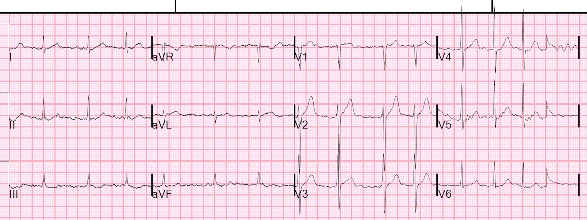
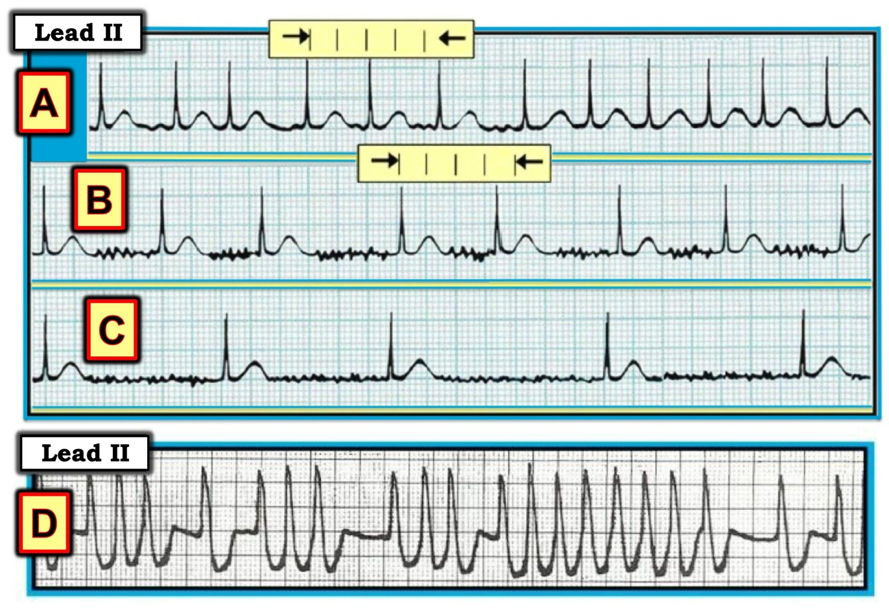

05/11/2019 — Một người khỏe mạnh 30 mấy tuổi đến khám vì buồn nôn, nôn, chóng mặt tư thế lành tính và rung nhĩ
Bản dịch tiếng Việt của bài "A healthy 30-something presented with nausea, vomiting, benign positional vertigo and atrial fibrillation" – Dr. Smith’s ECG Blog. Giữ nguyên toàn bộ 4 hình ảnh của bản gốc.
Một người đàn ông khỏe mạnh 30 mấy tuổi đến khám vì buồn nôn, nôn, chóng mặt (vertigo) và rung nhĩ (atrial fibrillation). Cơn chóng mặt khởi phát khi cử động đầu và đỡ khi giữ yên. Kèm theo là buồn nôn dữ dội và khó chịu vùng thượng vị.
Anh được ghi điện tâm đồ vì khó chịu vùng thượng vị có thể do nhồi máu cơ tim thành dưới:


Điện giải đồ bình thường.
Anh không uống rượu, không dùng ma túy.
Không kiểm tra tuyến giáp, vì rung nhĩ do tuyến giáp thì tần số sẽ rất nhanh. Điều gì bất thường ở đây, và tại sao?
Nguyên nhân nhiều khả năng gây rung nhĩ là gì?
Không có bằng chứng thực sự nào của thiếu máu cục bộ.
Có rung nhĩ.
—Thứ nhất, việc một người trẻ khỏe mạnh bị rung nhĩ là điều bất thường.
—Thứ hai, một người trẻ lẽ ra phải có đáp ứng thất nhanh nếu nút AV khỏe mạnh và không dùng thuốc ức chế nút AV.
Tại sao đáp ứng thất lại dưới 100 nhịp/phút?
Bệnh nhân này hoàn toàn không biết mình đang có nhịp bất thường, nên không thể nói chắc chắn anh đã ở trong nhịp đó bao lâu.
Tôi đã học được từ ca này, từ bác sĩ điện sinh lý của chúng tôi (Rehan Karim) và từ một trong những bác sĩ nội khoa bệnh viện (hospitalist) rất giỏi của chúng tôi, người đặc biệt giỏi về tim mạch (Meghan Walsh), rằng trương lực phế vị cực mạnh có thể VỪA gây rung nhĩ, VỪA đồng thời đi kèm với đáp ứng thất tương đối chậm chính vì trương lực phế vị cao đó.
Điều này đặc biệt hay gặp ở nam giới trẻ, khỏe mạnh, chơi thể thao.
Như vậy, chàng trai trẻ này bị chóng mặt tư thế lành tính, rồi buồn nôn dữ dội, làm tăng cao trương lực phế vị, và điều đó chuyển anh sang rung nhĩ với đáp ứng tương đối chậm.
Chứng chóng mặt tư thế lành tính (Benign Positional Vertigo) của anh được xử trí thành công bằng nghiệm pháp Epley.
Cuối cùng anh tự chuyển về nhịp xoang.
Để biết thêm, xem bài báo này:
Paroxysmal Atrial Fibrillation: A Disorder of Autonomic Tone? (Rung nhĩ kịch phát: một rối loạn của trương lực thần kinh tự chủ?)

===================================
BÌNH LUẬN CỦA TÔI, bởi KEN GRAUER, MD (5/11/2019):
===================================
Đây là một ca quan trọng, vì nó nêu ra một số khái niệm chưa được đánh giá đúng mức liên quan đến Rung Nhĩ (AFib).
Rối loạn nhịp tim bền bỉ thường gặp nhất, vượt xa các loại khác, là rung nhĩ. Khi đánh giá bệnh nhân AFib mới khởi phát (new-onset AFib) — một khi đã bảo đảm huyết động ổn định, các ưu tiên theo trình tự tối ưu bao gồm: i) Tìm nguyên nhân; ii) “Khắc phục” nguyên nhân (nếu có thể); iii) Làm chậm tần số; iv) Chuyển nhịp; và, v) Phòng ngừa huyết khối tắc mạch.
- Phần lớn bệnh nhân AFib mới không bị mất ổn định huyết động do bản thân AFib. Nếu có — thì cần sốc điện chuyển nhịp đồng bộ ngay lập tức!
- Một khi đã bảo đảm bệnh nhân ổn định — lý do tôi đề nghị xem xét 5 ưu tiên lâm sàng nêu trên theo đúng trình tự tôi liệt kê — là vì NẾU bạn có thể “tìm ra và khắc phục” nguyên nhân của AFib mới khởi phát — thì bạn có thể đồng thời làm chậm tần số, chuyển nhịp và giảm nguy cơ đột quỵ (tức là, nếu nguyên nhân của AFib mới là suy tim — thì lợi tiểu có thể giúp chuyển nhịp dễ hơn).
Nên ghi nhớ các Nguyên nhân Thường gặp của AFib. Có rất nhiều nguyên nhân … 3 nguyên nhân thường gặp nhất của AFib là:
- Suy tim/bệnh cơ tim.
- Bệnh tim thiếu máu cục bộ cấp (nhồi máu cơ tim cấp/hội chứng vành cấp).
- Tăng huyết áp (đặc biệt khi đã lâu năm, do những biến đổi cấu trúc của tim mà tăng huyết áp lâu dài gây ra).
Trong số rất nhiều nguyên nhân tiềm tàng khác của AFib có:
- Bệnh van tim
- Cường giáp (xét chung thì không phải là nguyên nhân thường gặp của AFib — nhưng vẫn rất quan trọng, vì có điều trị đặc hiệu).
- Thuốc và chất (tức là, cocaine, thuốc cường giao cảm, sử dụng rượu)
- Thuyên tắc phổi/giảm oxy máu
- Bệnh nội khoa nặng khác
- Ngưng thở khi ngủ
- Hội chứng suy nút xoang
- AFib “đơn độc” (lone AFib) (tức là, khi AFib xảy ra ở bệnh nhân dưới 50-60 tuổi và hoàn toàn không có bệnh tim nền [tức là, thậm chí không có cả tăng huyết áp]).
ĐIỂM THEN CHỐT (PEARL) #1: Ca hôm nay nhấn mạnh sự cần thiết phải chủ động cân nhắc thêm một thực thể bổ sung:
- AFib do cường phế vị (vagotonic AFib; bàn thêm ở phần dưới).
ĐIỂM THEN CHỐT (PEARL) #2: Mô tả nhịp tim của bệnh nhân trong ca này đơn giản là “rung nhĩ” sẽ là một mô tả chưa đầy đủ về nhịp tim của anh. TẠI SAO ???
TRẢ LỜI: Lý do mà việc chỉ nói người đàn ông 30 tuổi này đến khám với “rung nhĩ” là một mô tả chưa đầy đủ về nhịp — là vì mô tả này KHÔNG cho biết gì về tần số trung bình của đáp ứng thất. Biết được đáp ứng thất của AFib sẽ ngay lập tức cho bạn biết rất nhiều về hướng chẩn đoán và điều trị tiếp theo!
- Hình 1 cho thấy 4 ví dụ về AFib. Ở mỗi nhịp được trình bày — đều có tình trạng không đều hoàn toàn (irregular irregularity) không có dấu hiệu của sóng P xoang. Phức bộ QRS rộng ở ví dụ cuối cùng.
CÂU HỎI:
- Bạn sẽ mô tả từng nhịp trong Hình 1 như thế nào?
- Những cân nhắc chẩn đoán và điều trị nào cần được gợi ra ngay đối với các ví dụ AFib mà bạn thấy ở các Nhịp A, B, C và D?


TRẢ LỜI:
Nhịp A trong Hình 1:
- Đây là AFib với đáp ứng thất nhanh — mà tôi định nghĩa là AFib có tần số trung bình trên ~120/phút (Lưu ý rằng khoảng R-R thay đổi trong khoảng 2 đến 3 ô lớn — phù hợp với tần số trung bình ~120-130/phút). AFib nhanh là kiểu đáp ứng thất thường gặp nhất, vượt xa các kiểu khác, của AFib mới khởi phát.
- Lý do AFib nhanh mới khởi phát ở nhóm người lớn tuổi rất thường đi kèm suy tim là do: i) mất “cú hích” nhĩ (atrial kick) (vốn đóng góp từ 5-40% cung lượng tim — nhưng thường gần mức cao hơn ở những bệnh nhân tăng huyết áp lâu năm và hậu quả là rối loạn chức năng tâm trương); và, ii) tần số nhanh rút ngắn thời kỳ tâm trương một cách không tương xứng (là thời kỳ diễn ra sự đổ đầy tâm trương của thất trái) — làm giảm đáng kể cung lượng tim.
Nhịp B trong Hình 1:
- Đây là AFib với đáp ứng thất được kiểm soát — mà tôi định nghĩa là AFib có tần số trung bình trong khoảng ~70-110/phút. Đạt được kiểm soát tần số là một trong những mục tiêu chính khi điều trị AFib nhanh mới khởi phát bằng thuốc chống loạn nhịp.
- Đôi khi, một người lớn tuổi vốn khỏe mạnh đến khám vì AFib mới với đáp ứng thất được kiểm soát nằm trong khoảng tần số này. Nhưng, như Dr. Smith đã nhấn mạnh — Chúng ta không nên chờ đợi một người trẻ tuổi vốn khỏe mạnh (như trong ca này) đến khám vì AFib với tần số tim trung bình dưới 100/phút — trừ khi có điều gì khác (trong ca này là AFib do cường phế vị) đang diễn ra.
Nhịp C trong Hình 1:
- Đây là AFib với đáp ứng thất chậm — mà tôi định nghĩa là AFib có tần số trung bình dưới mức ~50-60/phút.
ĐIỂM THEN CHỐT (PEARL) #3: AFib mới khởi phát mà biểu hiện với đáp ứng thất chậm là điều bất thường! Khi gặp trường hợp này — cần ngay lập tức đặt ra một nhóm cân nhắc chẩn đoán khác hẳn. Bao gồm:
- Dùng các thuốc làm chậm tần số (tức là, digoxin; thuốc chẹn ß; verapamil/diltiazem; amiodarone; sotalol; clonidine; nhiều chế phẩm thảo dược). Hỏi về tất cả các loại thuốc bệnh nhân đang dùng — kể cả chế phẩm thảo dược (có thể bạn cần tra cứu xem loại nào trong số này có thể làm chậm tần số …). ĐIỂM THEN CHỐT (PEARL) #4 — Đừng quên hỏi về thuốc nhỏ mắt! (tức là, thuốc nhỏ mắt chẹn ß được hấp thu một phần — và có thể gây nhịp chậm đáng kể, hết đi khi ngừng thuốc nhỏ mắt! )
- Bệnh tim thiếu máu cục bộ cấp (tức là, do thiếu máu cục bộ/nhồi máu; hội chứng vành cấp). Nhồi máu cơ tim gần đây có thể biểu hiện bằng AFib chậm mà không có tiền sử đau ngực nào.
- Suy giáp (chức năng tuyến giáp bất thường có thể tạo thuận lợi cho rối loạn nhịp).
- Ngưng thở khi ngủ (vốn thường bị bỏ sót như một nguyên nhân tiềm tàng của rối loạn nhịp chậm).
- SSS (hội chứng suy nút xoang – Sick Sinus Syndrome) — chỉ có thể chẩn đoán sau khi đã loại trừ các nguyên nhân trong 4 gạch đầu dòng ở trên! ĐIỂM THEN CHỐT (PEARL) #5 — Gần như theo định nghĩa, một bệnh nhân trên 60-70 tuổi đến khám vì AFib chậm mới khởi phát, nhưng không dùng bất kỳ thuốc làm chậm tần số nào — không có thiếu máu cục bộ cấp hay gần đây — không bị ngưng thở khi ngủ — và có chức năng tuyến giáp bình thường — sẽ là SSS!
Nhịp D trong Hình 1:
- Đây là AFib với đáp ứng thất rất nhanh. Khoảng tần số thông thường của AFib “nhanh” là trong khoảng ~110-180/phút. Đó là vì thời kỳ trơ nội tại của nút AV bình thường nói chung không cho phép dẫn truyền quá 200-220 xung động mỗi phút.
- ĐIỂM THEN CHỐT (PEARL) #6 — NẾU tần số của AFib có lúc vượt đáng kể mức này (tức là, >200-220/phút) — thì nhiều khả năng bệnh nhân có AP (đường phụ – Accessory Pathway) đang đi tắt qua nút AV (tức là, WPW = hội chứng Wolff-Parkinson-White).
- Lưu ý ở Ô D của Hình 1 — phức bộ QRS rộng. AFib ở bệnh nhân WPW gần như luôn luôn là ngược chiều (đi xuống qua AP trước thay vì qua nút AV, làm đường dẫn tới tâm thất). Đó là do thời kỳ trơ của AP ngắn hơn. Kết quả là, phức bộ QRS thường rộng ở những bệnh nhân WPW bị AFib. Như thấy ở Ô D — rối loạn nhịp nhanh không đều hoàn toàn này có đặc điểm là nhịp chậm lại từng lúc ở một số chỗ, trong khi ở những chỗ khác đạt tần số cực nhanh có thể tới 250-300/phút (BẤM VÀO ĐÂY — để biết thêm về các rối loạn nhịp thường gặp trong WPW).
THÊM VỀ AFib do cường phế vị (vagotonic AFib):
- Rối loạn chức năng thần kinh tự chủ thường đóng vai trò nổi bật trong sự khởi phát AFib. Trong đa số trường hợp, có hoạt động giao cảm quá mức — nhưng đôi khi, tăng trương lực phế vị có thể khởi phát các cơn AFib (Kích thích phế vị rút ngắn thời kỳ trơ hiệu quả của nhĩ — và do đó làm tăng khả năng PAC gây ra AFib).
- AFib do cường phế vị (vagotonic AFib) — thường gặp nhất ở nam giới trẻ đến trung niên (tức là, 30-50 tuổi). Tích cực tham gia các môn thể thao sức bền (tức là, đạp xe, chạy đường dài, trượt tuyết băng đồng, v.v.) tạo thuận lợi cho tình trạng tăng trương lực phế vị lúc nghỉ kéo dài.
- NẾU các cơn AFib thường xảy ra nhất lúc nghỉ, sau bữa ăn, hoặc trong khi ngủ — thì nhiều khả năng các cơn AFib này do kích thích phế vị.
- Các cơn AFib do cường phế vị dễ tự hết vào buổi sáng hoặc trong lúc vận động (tức là, khi trương lực giao cảm tăng).
- AFib tái phát thường được thúc đẩy bởi các cơn ho, buồn nôn hay nôn dữ dội — hoặc sau khi ăn thức ăn đặc biệt cay, hay thức ăn hoặc đồ uống rất lạnh (tất cả đều là những yếu tố có thể kích thích trương lực phế vị). Đôi khi, chỉ riêng việc ăn một bữa cũng có thể thúc đẩy cơn.
- Nếu theo dõi Holter 24 giờ — thường sẽ thấy một giai đoạn nhịp chậm xoang trước khi khởi phát AFib.
- Các cơn AFib do cường phế vị thường biểu hiện đáp ứng thất tương đối chậm hơn (như đã xảy ra trong ca này).
- Siêu âm tim có thể bình thường.
QUAY LẠI VỚI CA BỆNH NÀY — Điều đáng chú ý là bệnh nhân này hoàn toàn không biết mình đang bị AFib! Dù vậy — rõ ràng anh đã chuyển về nhịp xoang sau khi chứng chóng mặt được điều trị thành công bằng nghiệm pháp Epley.
- Với bệnh sử này — tôi ngờ rằng bệnh nhân có lẽ đã có những cơn AFib do phế vị khởi phát thường xuyên — và chúng tự hết khi trương lực phế vị giảm. Việc anh không nhận biết được các cơn AFib khi chúng xảy ra làm việc xử trí phức tạp hơn. Dù vậy — theo dõi Holter kèm NHẬT KÝ có thể giúp nhận ra những hoạt động sinh hoạt hằng ngày nào dễ thúc đẩy cơn nhất. Có thể có một số yếu tố thúc đẩy cơn AFib do phế vị của anh mà có thể tránh được, hoặc ít nhất là giảm thiểu.
- Nên tránh dùng các thuốc làm chậm tần số, như thuốc chẹn ß, trong điều trị — vì chúng có thể làm mất cân bằng trương lực phó giao cảm thêm nữa (do thuốc chẹn ß làm giảm trương lực giao cảm).
- Các thuốc chống loạn nhịp làm giảm trương lực phế vị (như flecainide, disopyramide) có thể có hiệu quả.
- Sau cùng, nếu các cơn AFib do cường phế vị xảy ra thường xuyên và dai dẳng — có thể cần chuyển khám chuyên khoa điện sinh lý tim (EP). Một số bệnh nhân cần triệt đốt để kiểm soát AFib do cường phế vị …
- ĐIỀU CỐT LÕI — Hãy nghĩ đến AFib do cường phế vị (vagotonic AFib) như một khả năng vào lần tới khi bạn gặp AFib mới ở một người trẻ tuổi vốn khỏe mạnh — đặc biệt nếu tần số AFib tương đối chậm, và bệnh nhân là nam giới, có tham gia các hoạt động sức bền.
- ĐIỂM THEN CHỐT (PEARL) #7: Một hiện tượng có liên quan cần biết là Blốc AV do cường phế vị (vagotonic AV Block) — trong đó một người vốn khỏe mạnh, trong lúc ngủ hoặc một tình huống nào khác đi kèm tăng trương lực phế vị (tức là, nôn kéo dài), biểu hiện một rối loạn dẫn truyền kiểu blốc AV rất không điển hình, trong đó các khoảng PR và R-R biến đổi không thể đoán trước, không thể phân loại theo “các quy tắc thông thường” của 3 mức độ blốc AV. (BẤM VÀO ĐÂY — để xem một ca bàn luận rất hấp dẫn về hiện tượng này).
Chúng tôi xin CẢM ƠN Dr. Smith về ca bệnh thú vị này!